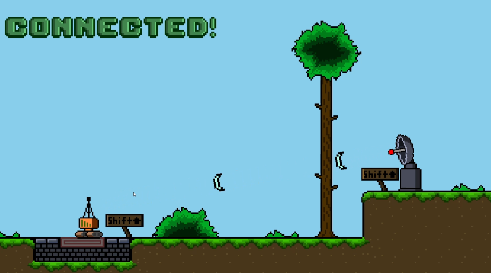
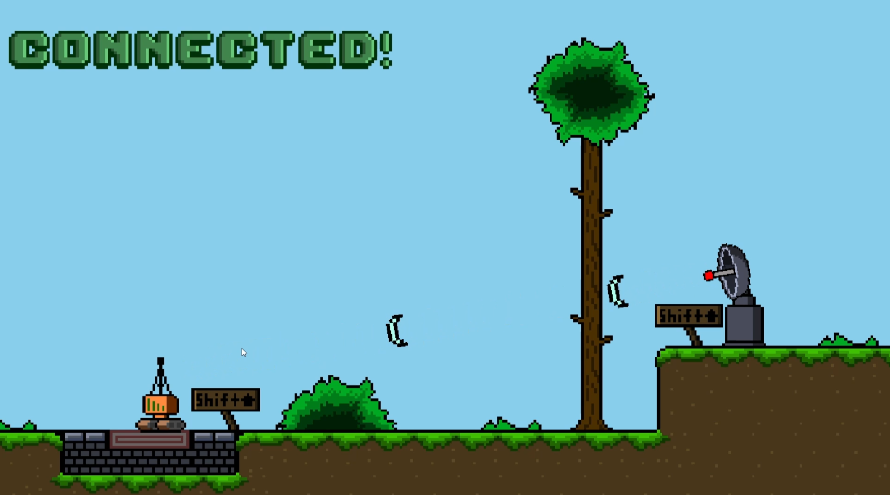
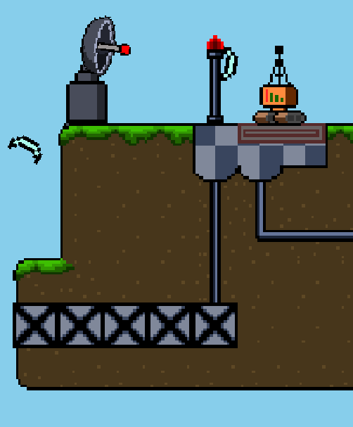
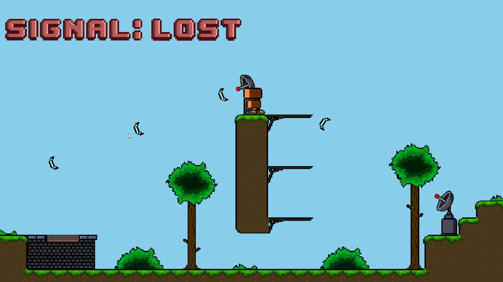

I created Lost Signal alongside with a friend for a game jam as an opportunity to learn level/puzzle design and as well as going through the whole process of making a game.
I did the programming, art, level design, and sound effects, while my friend made the music for it.
You can find the project files and code for the game on my github page here, and a web export of the game on the itch.io submission page here.
 


